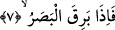

Yahut bu cümle bir önceki âyette geçen “insan” kelimesinden hâl de olabilir. Buna
göre âyetin mânâsı şöyle olur. “İnsanoğlunun öldükten sonra dirilmeyi inkâr etmesi bu
meselenin kendi kafasında karışmasında ve öne sürülen iddiânın doğruluğuna delil
bulunmayışından değildir. Tam tersine insan “kıyâmet ne zamanmış” diyerek günaha
devam etmek istiyor.
İşte bu inkâr, insanoğlunun yaratılışı gereği şehevi arzularına meylettiğini, öldükten
sonra dirilme olgusunun hayatı zehir ettiğini göstermektedir. Şu hâlde kuşkusuz insan bu
gerçeği inkâr edecek ve onu ikrardan yüz çevirecektir.
“İnsan kendisinin kemiklerini toplayamayacağımızı mı sanıyor” (el-Kıyâme,
75/3) âyeti, ortada bir şüphe ve cehâlet olduğunu gösteriyor. Üzerinde durduğumuz bu;
fakat “insan ileriye doğru dâimâ kötülük etmek ister” âyet-i kerîmesi ise insandaki
şehvete ve gerçekleri göz ardı etmeye delâlet etmektedir. O hâlde bu iki âyet iki ayrı
şahıs açısından gerçekleri ifâde etmektedir.
Üzerinde durduğumuz âyette mahcub/perdeli olan insanın zulmânî nefsi sebebiyle
mahrum olduğu için “kıyâmet ne zamanmış” diye sorduğuna ...her saat, her lahza hattâ
her göz açıp kapama esnâsında -ifnâ/yok edici, ibkâ/durdurucu tecellîlerin ardarda
gelmesi dolayısıyla- kıyâmetin gerçekleştiğini göremediğine işâretler vardır. Nitekim bu
tecellîlerin ardarda zuhûr ettiği ve her an kıyâmetin gerçekleştiği şu âyet-i kerîmede
vurgulanmaktadır: “Hayır onlar yeni bir yaratma hususunda şüphe içindedirler.”
(Kaf, 50/15)
7. İşte, göz kamaştığı,
Yâni gözün hayretle seyirdiği, kıyâmetin dehşetinden korkarak hareket ettiği ifâdesi
insanın şimşeğe bakıp da dehşete düşmesinden alınmadır. İşte bu kullanım daha
sonraları gerçekte şimşeğe bakıp da hayrete düşme olmasa bile her türlü hayrete düşme
fiillerinde kullanılır olmuştur.
8. Ay tutulduğu,
Işığı kaybolduğu... Bâzı âlimlere göre “hasf” kökü noksanlık anlamınadır. Bu kök hem
vasıf ve hem de zâtlarda kullanılır. Bu âyet-i kerîmede aya tapanlara bir red vardır.
Çünkü ay eğer -kendisine tapan kişilerin iddiâ ettikleri gibi- şâyet ilâh olsaydı.
Kendisini savunurdu, ay tutulması olayı olmaz ve ışığı gitmezdi.
Fethurrahmân’da ay ve güneş tutulması anlamına husûf ve küsûf kelimelerinin anlamı